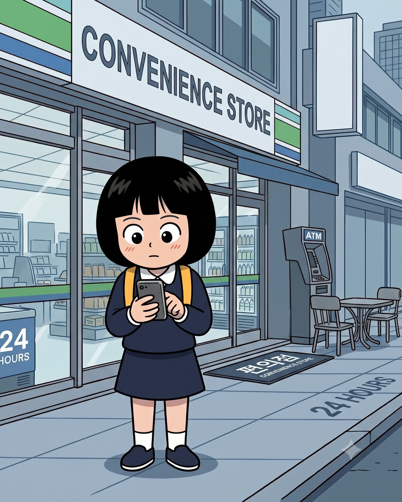
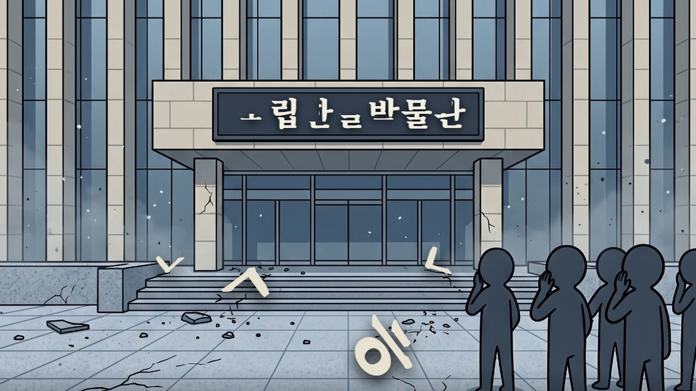
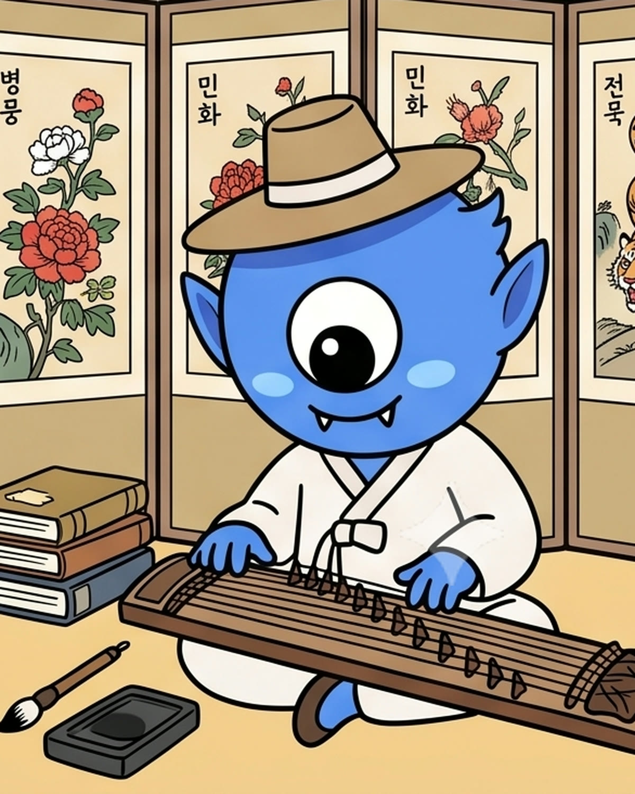
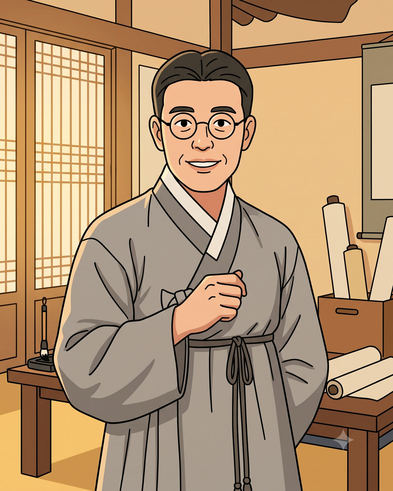
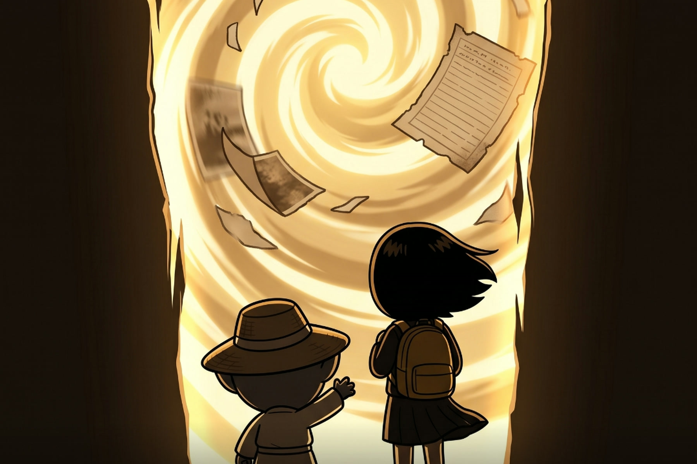
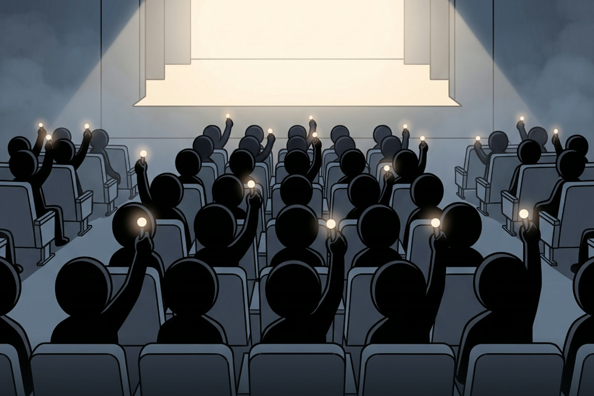

김덕이
열세 살 · 이 이야기의 주인공
줄임말로 말하고 짧은 영상만 봅니다. 어른들 말은 잘 안 듣습니다. 그런 덕이가 1942년에 도착합니다.
기술융복합 3D 디지털 판타지 아동극
한글 폼 미쳤다! — 말모이 작전
오늘 아침, ㄱ과 ㅎ이 사라졌습니다. 국립한글박물관 간판에서 글자가 떨어지고, 사람들은 말을 잃어갑니다. 열세 살 덕이가 도깨비 초비와 함께 1942년으로 떠납니다. 잃어버린 글자를 되찾으러.

공연이 끝난 뒤 설문에 남겨주신 소감입니다
학부모 ㄱ
아이들이 한글에 대해 소중한 마음을 가지게 되었습니다.
학부모 ㄴ
이윤재 선생님이 김해 사람인 걸 아이는 오늘 처음 알았대요. 한글박물관을 두 번이나 다녀왔는데도요.
그분들이 지켜주신 덕에 지금 우리가 일본말을 쓰지 않고 산다는 걸 느낀 시간이었습니다.
학부모 ㄷ
세종대왕이 초비에게 전화 거는 장면 너무 재밌었어요 ㅋㅋ
이어폰 끼고 직접 참여하는 것도 좋았습니다.
학부모 ㄹ
초비가 덕이를 꾸짖는 장면요. 맷돌에 갈아엎는다는 그 표현, 저도 한 수 배웠습니다 ㅎㅎ 초등학교로 초빙되어야 해요!!
학부모 ㅁ
마지막에 이윤재 선생님이 AI 영상으로 남긴 말에 울었어요. 그때 지켜내신 한글로 지금 우리가 말하고 있네요.
학부모 ㅂ
연극 보고 한글박물관에 갔는데 아이가 이윤재 선생님을 바로 찾았어요. “엄마, 오늘 연극에서 봤던 선생님이 여기 있어!”
다른 열사분들 이야기도 연극으로 보고 싶어요. 또 보러 올게요!
소감 하나하나 배우들과 같이 읽었습니다. 고맙습니다 🙏
2026년 공연 관람객 설문에 들어온 소감입니다. 길이를 줄인 곳이 있고, 쓴 분의 이름은 밝히지 않습니다.
공연 회차
뉴스 속보가 뜹니다. 자음이 하나씩 지워지고 있다고. 세상이 조금씩 멈춥니다. 말이 통하지 않게 된 사람들은 서로를 알아보지 못합니다.
한글을 만든 세종은 이 일을 그냥 두고 볼 수 없었습니다. 한글보호국 특별감독관으로 임명된 도깨비 초비가 말썽꾸러기 김덕이 앞에 나타납니다. 줄임말과 짧은 영상에 익숙한, 우리 아이들과 똑같은 열세 살에게.
그리고 박물관 앞에서 시간의 문이 열립니다. 덕이가 떨어진 곳은 1942년 경성. 우리말을 쓰는 것조차 죄가 되던 시절입니다.
무대에서 확인해 주세요.

열세 살 · 이 이야기의 주인공
줄임말로 말하고 짧은 영상만 봅니다. 어른들 말은 잘 안 듣습니다. 그런 덕이가 1942년에 도착합니다.

도깨비 · 한글보호국 특별감독관
회현동에서 온 수호 도깨비. 잔소리가 많고 참견이 심하지만, 덕이 곁을 끝까지 떠나지 않습니다.

한뫼 이윤재 · 국어학자 · 김해 사람
덕이가 1942년에서 만나는 어른. 실제로 살았던 사람이고, 김해에서 태어났습니다. 그가 그 방에서 무엇을 하고 있었는지는 무대에서.
한글을 만든 사람
훈민정음이 무너지는 것을 보고 초비를 부릅니다. 무대는 이때 빛으로 가득 찹니다.
이윤재 선생은 김해에서 태어났습니다. 국어학자였고, 독립운동가였습니다. 우리말이 사라져 가던 시절에 전국의 낱말을 하나씩 모으던 사람이었습니다.
교과서에서는 이름 한 줄로 지나갑니다. 김해에 살면서도 모르는 사람이 더 많습니다. 이 공연은 그 이름을 아이들 눈앞에 데려다 놓습니다. 우리 동네 사람이었다는 것까지 함께요.

1942년의 그 방에서 덕이는 무엇을 보게 될까요. 그리고 덕이가 해야 할 일에는, 객석에 앉은 여러분도 포함되어 있습니다.
이 작품에서 관객은 말모이 작전의 대원입니다. 스마트폰을 꺼내야 하는 순간이 있고, 옆 사람과 무언가를 주고받아야 하는 순간도 있습니다. 미리 알려드릴 수 있는 건 여기까지입니다.
QR코드를 찍고 우리 지역 말 퀴즈를 풉니다. 여러분이 맞힌 글자가 무대로 전송됩니다.
객석 전체가 동시에 해야 하는 일이 한 번 있습니다. 배터리를 채워 오세요.
객석을 가로질러 무대까지 닿아야 하는 것이 있습니다. 무엇인지는 그날 알게 됩니다.
비밀입니다. 끝까지 자리를 지켜주세요.

3D 프로젝션 매핑과 그림자극, LED를 함께 씁니다. 시간의 문이 열리고, 무대 벽 전체가 글자로 뒤덮입니다.
2026. 8. 16 – 8. 23 · 회현동소극장 · 여섯 번 공연합니다.
예매 신청하기신청서에서 회차를 고르시면 됩니다. 단체 관람은 055-339-9110으로 문의해 주세요.